01
DAILY RECORD
毎日の記録から
成長を実感。
プレイ結果を積み重ねることで、速度や正確さの変化を振り返ることができます。
TYPING GAME / DAILY GROWTH
MameTypeは、タイピングに「記録」「成長」「RPG」を組み合わせた ブラウザゲームです。
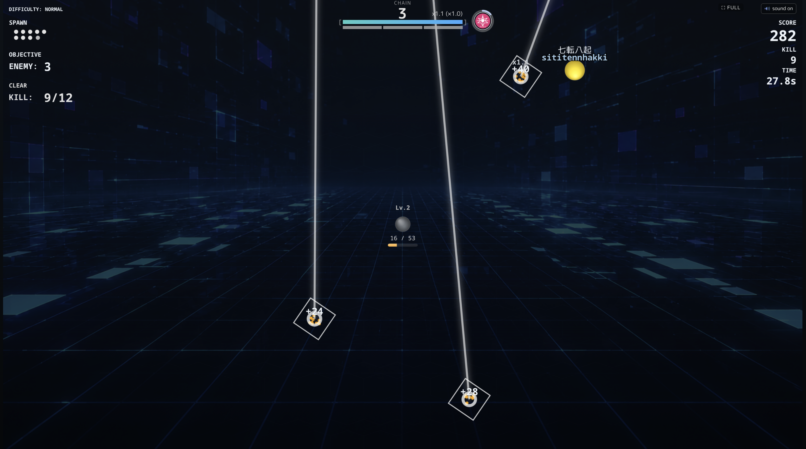
TYPE. BATTLE. GROW.
ABOUT MAMETYPE
タイピングは、毎日少しずつ続けることで上達していきます。 MameTypeは、その変化を数字とゲーム体験の両方で感じられるように設計されています。
日々の記録を積み重ねながら、ステージへ挑戦し、敵と戦い、 苦手な問題をもう一度練習する。昨日の自分を、今日の自分が少しだけ超えていく。
FEATURES
DAILY RECORD
プレイ結果を積み重ねることで、速度や正確さの変化を振り返ることができます。
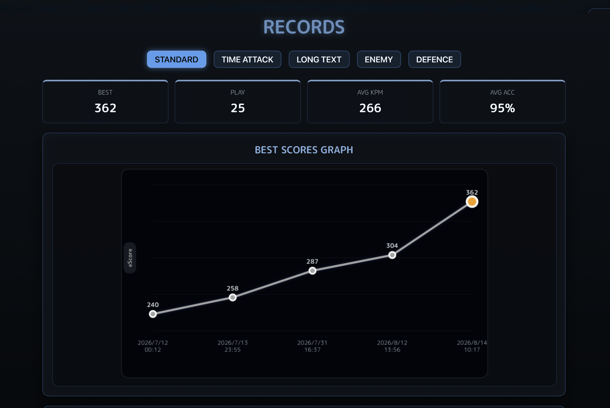
RPG ELEMENT
敵を倒し、ステージを攻略しながらゲームを進めます。
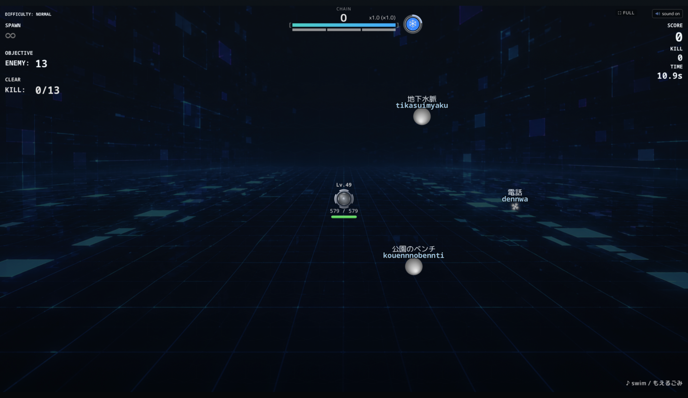
ONLINE RANKING
オンラインランキングに対応。自分の成長を数字で確認しながら、他のプレイヤーとの記録も楽しめます。
RETRY
間違えた問題をやり直して、苦手をそのままにしません。
REALTIME HUD
平均入力速度と平均正確性を、プレイ中の画面（HUD）にリアルタイム表示。
今の自分のタイピング力を確認しながらプレイできます。
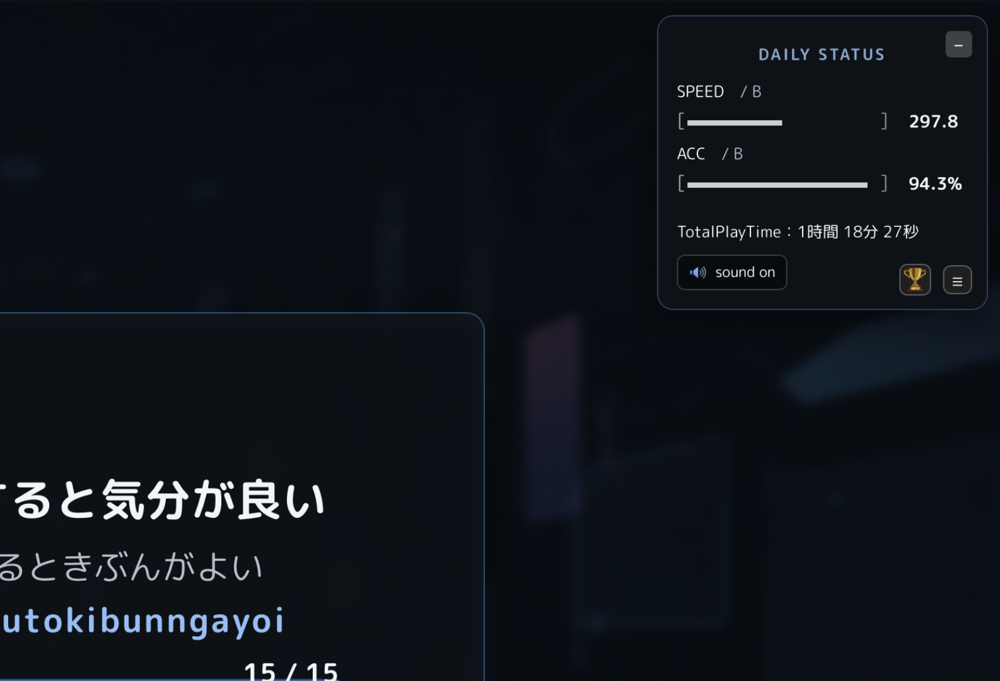
BROWSER / OFFLINE
インストール不要。ブラウザですぐにプレイできます。ゲームをブラウザに保存すれば、オフラインでも楽しめます。
HOW TO PLAY
MameTypeは、タイピングを中心にさまざまなゲームモードや RPG要素を楽しめるブラウザゲームです。 ここでは基本的なモードから、QUEST MODEの遊び方まで紹介します。
BASIC OPERATION
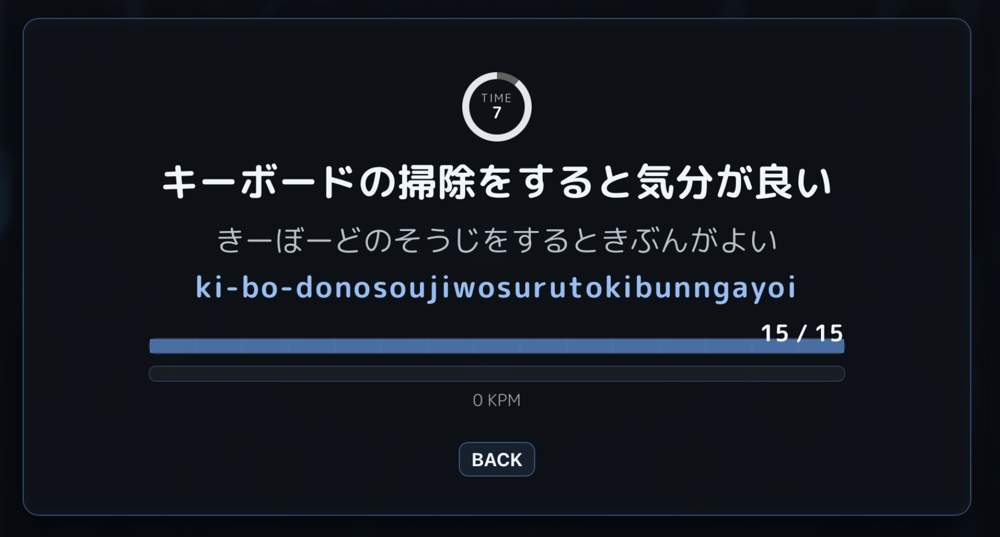
MameTypeでは、ひらがなの文章を見ながらローマ字を入力します。 そのとき、入力したキーに応じて次に入力できるアルファベットが 自動的に切り替わります。
たとえば「し」なら、 3通りの入力に対応
shi・si・ci の
いずれの入力でも入力できます。
入力可能なキーに合わせて表示が変化するため、 自分が入力しやすいローマ字でタイピングできます。
TITLE MENU
タイトルメニューから、プレイしたいモードや 記録、各種設定を選択できます。
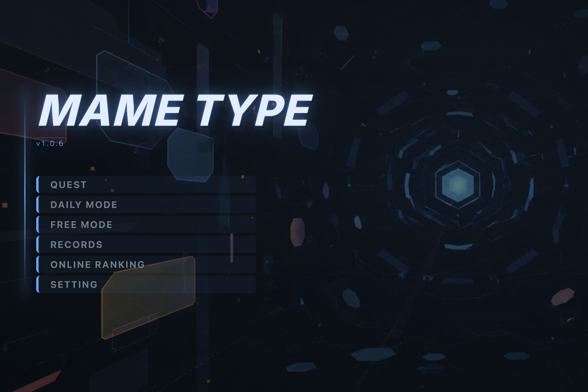
GAME MODES
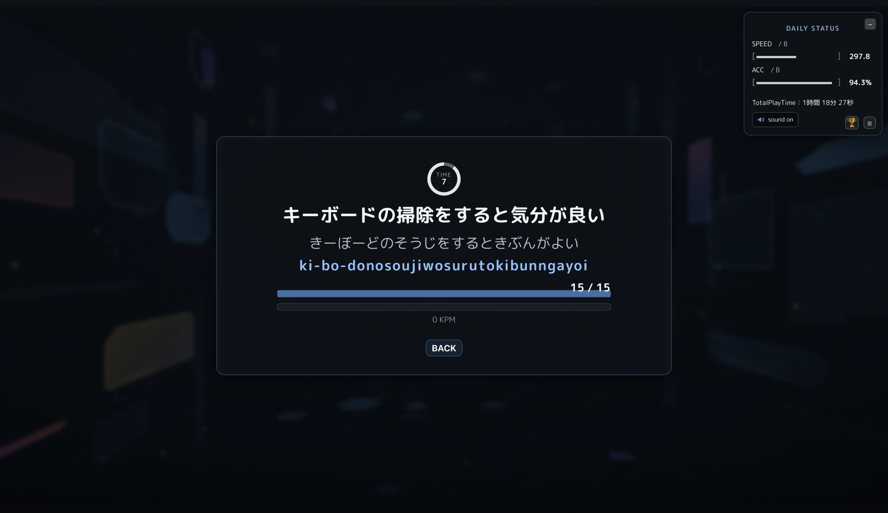
STANDARD
MameTypeの基本となるタイピングモード。 表示された文章を入力して、速度と正確さを競います。 問題数が決まっています。
1回のプレイごとに速度と正確率が記録され、自分のタイピング傾向を確認できます。 まずは自分の基準となるタイピング力を知りたい方に最適なモードです。
表示された文章をそのまま入力していきます。
一つの文章を打ち終わったら次の文章が出てきます。
指定された問題数を打ち終わったら終了です。
全15問で、英語問題は出題されません。
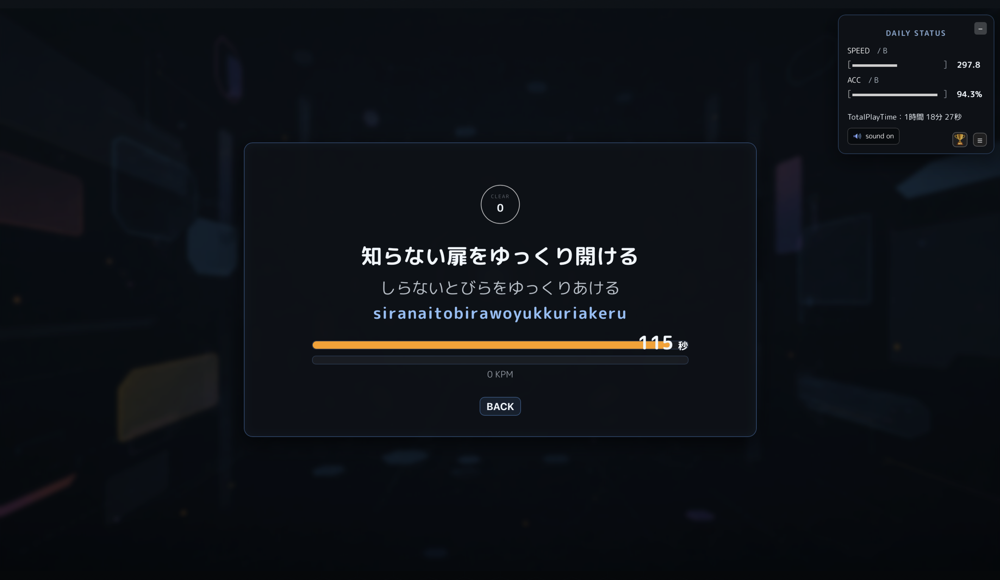
TIME ATTACK
制限時間の中で、できるだけ多くの文字を 正確に入力することを目指します。
画面に表示される制限時間を使い切り、どれだけ多くの文字を正確に入力できるかを競います。 スピードはもちろん、ミスの少なさも結果に響きます。短時間で手軽に挑戦できるモードです。
画面に表示される制限時間内に、どれだけ多くの文字を正確に入力できるかを競います。
制限時間120秒で、英語問題は出題されません。
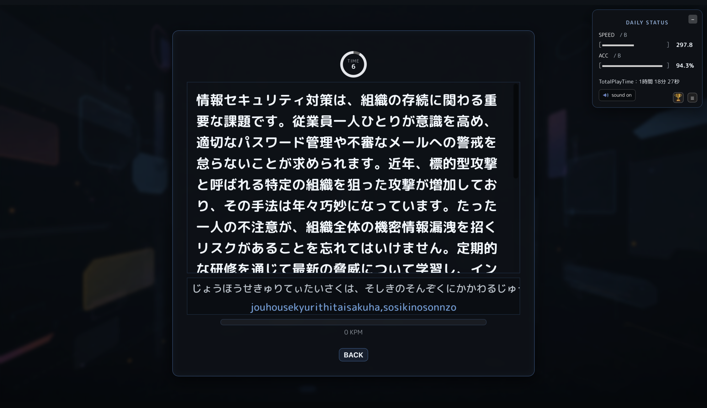
LONG TEXT
長い文章を入力するモード。 文章を読む力と、安定したタイピング力を鍛えられます。
画面に入りきらないほど長い文章を、最後まで集中して入力します。 ペースを乱さない集中力と、正確さを維持する持続力が身につきます。
画面に入りきらないほど長い文章を、読み進めながら最後まで集中して入力していきます。
約400字の長文が、さまざまなジャンルから出題されます。
文学、情報セキュリティ、プログラミング、キーボード関連、など多種多様です。
ENEMY MODE
出現する敵をタイピングで倒していくバトルモード。 ダメージを受ける前に敵を撃破します。
出現した敵に表示されている文字を入力して攻撃します。 タイピングの速度と正確さが、そのまま戦闘力になります。
出現した敵に表示されている文字を入力して攻撃し、敵を撃破していきます。
指定された敵の数倒す、指定時間まで生き残る、などの条件を満たせば終了です。
敵の最初の文字を入力すると、その敵に自動でロックオンされます。
最初の文字が重複している場合は、次に入力した文字で判断します。
もちろん、途中で別の敵に切り替えることもできるし、一番近くの敵に自動でロックオンすることもできます。
チェインバーが無くなる前に敵を倒すと、チェインがつながり、より高いスコアを獲得できます。
ただし、ミスタイプでチェインバーが減少します。
また、最大チェイン数が最後のスコアに影響します。
色々な効果を持ったスキルやアイテムを使って、戦闘を有利に進めることができます。
ただし、DAILY MODEではスキルやアイテムは使用できません。
ミスタイプをしないで文字を入力すると、コンボがつながり、スキルのクールダウンタイムが短縮されます。
最後の結果に補正が入り、最終スコアとなります。
最大チェイン数、正確性、難易度、打鍵速度が補正に影響します。
さらにノーミス、ノーダメージでクリアするとスコアにボーナス補正がつきます。
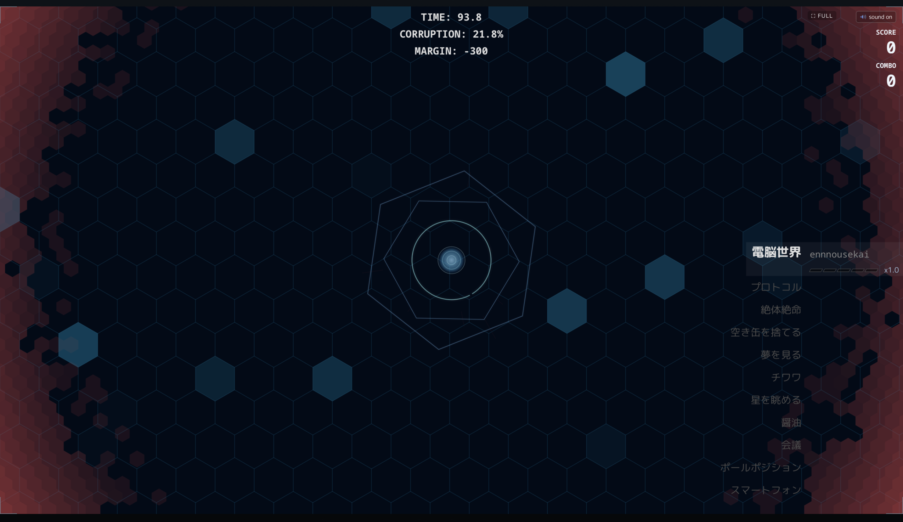
DEFENSE MODE
迫りくる侵食からシステムを守る防衛戦。 制限時間内に指定された文字数以上を入力し、 できるだけ高い評価を目指します。
迫りくる侵食からシステムのコアを守る防衛戦です。 制限時間内に指定文字数の入力を達成し、侵食の進行を食い止めて 高い評価を目指します。
制限時間内に、指定された文字数を入力することを目指します。
文字列の入力が完了すると、自動的に次の文字列へ進みます。
コンボをつなげると制限時間が増え、ミスタイプすると制限時間が減少。
正確さとスピード、両方がクリアのカギになります。
ミスタイプせずに入力を続けると、コンボがつながりコンボバーが上昇します。
一定量までチャージすると、制限時間やスコアにボーナスが発生。
さらにコンボバーを最大まで貯めると、OVERDRIVEが発動します。
OVERDRIVE中は、一定文字数を入力するたびに制限時間ボーナスを獲得できます。
出題される文字数は3-12文字程度。ジャンルは標準タイプのみ。
クリア条件は120秒以内に300文字以上。
QUEST MODE
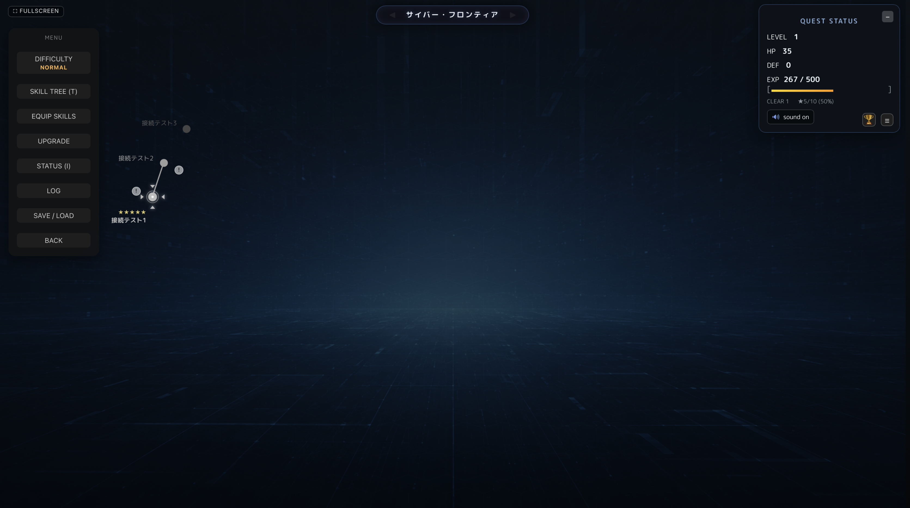
QUEST MODEでは、マップ上のノードを順番に攻略しながら ストーリーを進めていきます。
敵をタイピングで倒し、ノードをクリアします。
特定の地点では防衛モードに挑戦します。
マップの先には強敵とのボス戦が待っています。
クリアしたノードにも何度でも挑戦できます。
レベルを上げながら、クリア評価に応じた星を集め、
スキルをさらに強化していきましょう。
QUEST MODEでは、スキルツリー上のノードをクリアすることで、 新しいスキルが解放されていきます。 ノードを進めながらスキルを獲得し、 自分の戦い方を少しずつ広げていきましょう。
SKILL TREEのノードをクリアして、 その先に待つ新たなノードやスキルを解放しましょう。 ノードごとに設定されたさまざまな条件を達成し、 スキルツリーを攻略していくことで、さらなる力を手に入れられます。
戦闘中に任意のタイミングで使用できるスキル。 状況に合わせて使うことで、戦闘を有利に進められます。
スキルツリーには、アクティブスキルだけでなく、 戦闘やゲームプレイを支えるさまざまなスキルや成長要素があります。
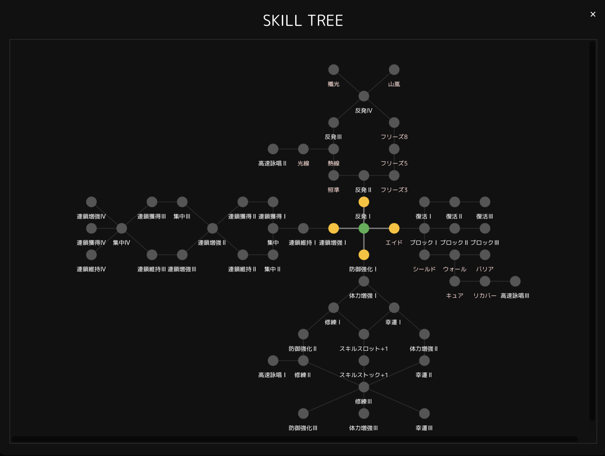
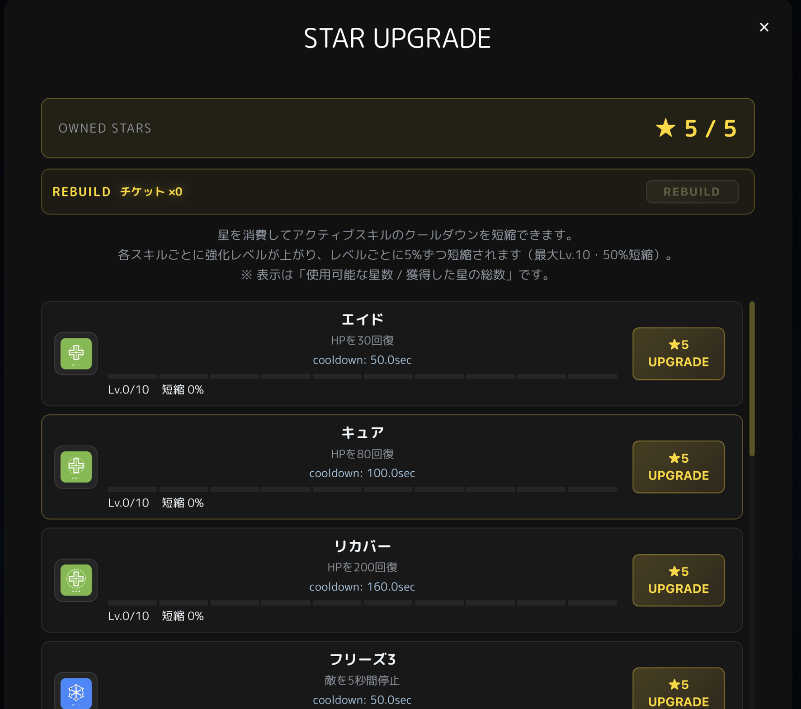
ノードをクリアすると、プレイ結果に応じて星を獲得できます。 各ノードでは最大5つの星を獲得できます。 獲得した星は、解放したスキルの強化に使用できます。
アクティブスキルは、星を使って強化することができます。 強化することで、スキルのクールダウンタイムを短縮できます。 よく使うスキルを強化して、自分のプレイスタイルに合わせて 戦闘を有利に進めましょう。
RESULT / GROWTH
入力速度を記録。
正確さを記録。
プレイ結果をスコア化。
オンラインランキングにも挑戦。
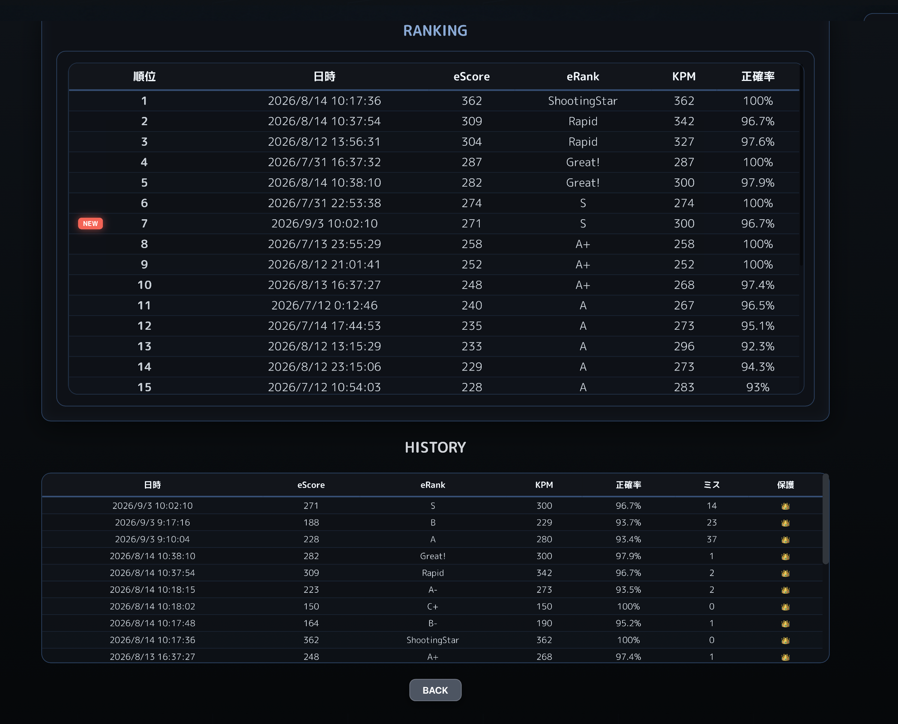
HOW TO START
PLAY ONLINE
ブラウザでMameTypeのゲームページを開くだけ。そのままプレイできます。
MameTypeをプレイ →SAVE TO DEVICE
ブラウザにゲームを保存しておけば、デスクトップなどからいつでも起動できます。
オフラインでもプレイできるので、好きなときにタイピングを楽しめます。
UPDATE ONLINE
オンラインでプレイすれば、アップデートもかんたんです。
LATEST VERSIONSAVE TO DEVICE
MameTypeはブラウザからPCに追加して、デスクトップなどから アプリのように起動できます。保存後はオフラインでもプレイできます。
共有メニューから「Dockに追加」を選択します。
アドレスバーのインストールアイコン、またはメニューから 「MameTypeをインストール」を選択します。
アドレスバーのアプリアイコン、またはメニューから 「アプリ」→「このサイトをアプリとしてインストール」を選択します。
Firefoxではブラウザからのアプリ追加方法が異なるため、 ブックマークやショートカットからMameTypeを起動できます。
RECOMMENDED ENVIRONMENT
MameTypeは、最新のブラウザと物理キーボードがあれば プレイできます。
タイピングゲームのため、ゲーム画面の描画性能だけでなく、 キー入力の低遅延も重要です。
SYSTEM REQUIREMENTS
MameTypeは、画面の描画やゲーム中のエフェクトなどを リアルタイムで処理しています。 PCの性能に合わせて描画品質を調整できます。
Low設定・30fps・グロー影OFFでのプレイを想定。
Auto / High設定で、ゲームの演出を含めて快適にプレイするための目安。
MameTypeでは、Canvas 2Dによるゲーム画面の描画、 グローや影、パーティクルなどのエフェクト、 リアルタイムアニメーションを使用しています。
高解像度ディスプレイでは描画するピクセル数が増えるため、 PCの性能によっては負荷が高くなる場合があります。 その場合は描画品質やフレームレートを下げることで、 より安定したプレイができます。
SUPPORT MAMETYPE
MameTypeは個人で開発・運営しています。
楽しんでいただけたら、GitHub Sponsorsから開発を応援してもらえるとうれしいです。
LINKS